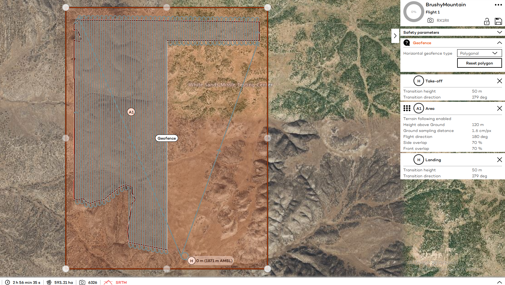

Brushy Mountain UAS Mapping

In June 2023, I conducted an RGB imaging mission of a State Land Office parcel in south-central New Mexico to support the agency's planned inventory and restoration efforts. The site was located in the extended White Sands Missile Range restricted airspace, which required special coordination with Holloman Airforce Base. Seven flights of the two square mile parcel was conducted using a Wingtra One Gen II drone equipped with a Sony RX1R II sensor, collecting over 5,550 frames of imagery. Additionally, I conducted an RTK GNSS survey of ground reference points at the site for geometric registration of the imagery. The imagery was post-processed in Agisoft Metashape Professional to produce an orthomosaic and digital surface model with spatial resolutions of 1.6cm and 7 cm respectively, with horizontal error +/- 6cm and vertical error +/- 1m.